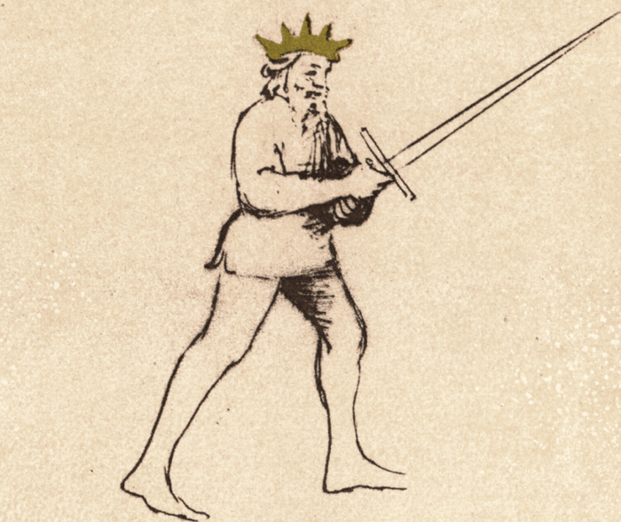

Posta Breve

Flos Duellatorum (Pisani-Dossi MS), c. 1409 - Novati facsimile edition, 1902
The Short Guard
Classification: Stabile — Stable Guard
Posta Breve is one of the most compact and structurally strong guards in Fiore's system. Unlike Posta Longa, which projects threat outward through extension, Breve keeps the sword close to the body while maintaining control of the centerline.
For the modern fencer, Posta Breve teaches an important lesson:
A threat does not need to be extended to be dangerous.
The guard appears restrained, but it is prepared to launch immediate offense while maintaining exceptional defensive structure. Fiore himself calls it an excellent guard and emphasizes both its strength and its ability to strike quickly.
Posta Breve is a guard of compression. It stores potential energy close to the body and releases it only when the proper opportunity presents itself.
Fiore's Description
Getty Manuscript Text
"Posta breve son posta excellente, e son in guardia molto forte. E uoglio ferir inanzy prestamente e poi mettermi in coperta in certe sorte."
Translation
"I am Short Guard, an excellent guard, and I am in a very strong guard. And I want to strike quickly forward and then put myself under cover in certain ways."
Fiore's description is remarkably direct.
He praises the guard immediately, calling it excellent. He then emphasizes two qualities:
- strength
- speed
The guard launches a quick attack and immediately returns to safety.
This balance between offense and defense defines Posta Breve.
Bilateral Use
Posta Breve is a compact, forward-facing guard with minimal lateral orientation. Like Posta Longa, the distinction between Destra and Sinestra is small: the sword is held close to the body with the point forward, and that core structure does not change meaningfully from side to side.
The guard can lean slightly right or left depending on which hand is dominant or which preceding action has been performed, but the tactical function, compact readiness, quick offense, structural defense, remains identical. Both expressions should be practiced, particularly in the context of transitioning into Breve from left-side guards and launching the thrust or short fendente from the left-leaning position.
The bilateral importance of Posta Breve is most relevant in guard flow exercises, where the fencer must be able to arrive in Breve from any direction and immediately launch an efficient action without resetting.
The Meaning of the Name
The name Posta Breve means Short Guard.
Unlike Posta Longa, where the sword is extended toward the opponent, the sword in Breve remains close to the body.
The name describes the compressed nature of the position.
The sword is not withdrawn out of fear or deception. Instead, it is held close to preserve structure and prepare rapid action.
This compression gives the guard its strength.
Physical Structure
Body Position
The body remains upright and balanced.
Weight may be centered or slightly forward depending on the tactical situation.
The guard should feel stable rather than aggressive.
Unlike Donna, which coils for power, or Coda Longa, which withdraws for deception, Breve feels compact and controlled.
There should be very little unnecessary movement.
Hand and Sword Position
The hands are held high near the head, temple, or upper shoulder.
The pommel remains close to the body.
The point projects forward and slightly upward toward the opponent.
The arms remain relaxed and compact.
The sword should feel connected to the body rather than extended away from it.
One useful test is to imagine that your hands are protected behind your structure rather than reaching toward the opponent.
Tactical Function
Posta Breve is a guard of structure, readiness, and immediate response.
Fiore describes it as:
- excellent
- strong
- quick
These three characteristics define its tactical identity.
The guard allows the fencer to:
- strike rapidly
- recover quickly
- maintain strong defensive structure
- transition efficiently into other guards
Unlike Longa, which dominates through extension, Breve dominates through compact readiness.
The sword remains close enough to defend while still threatening immediate offense.
Breve and Longa
One of the most important relationships in Fiore's system is between Posta Breve and Posta Longa.
These guards represent opposite expressions of the same tactical idea.
Posta Longa
- extended threat
- controls measure
- occupies space
- forces reactions
Posta Breve
- compressed threat
- preserves structure
- prepares action
- responds rapidly
If Longa teaches the fencer how to control distance, Breve teaches them how to maintain readiness once distance has been established.
Together they form a natural pair.
Why Is Breve Stable?
Many students initially expect Breve to be classified as a mutable guard because it transitions quickly and launches rapid attacks.
Fiore classifies it as Stabile.
This makes sense when viewed through structure rather than motion.
The sword remains close to the body.
The hands are protected.
The guard is difficult to displace.
Unlike Longa, the arms are not extended where they can be manipulated or controlled.
Breve remains strong because the weapon stays connected to the body's structure.
Common Attacks from Posta Breve
Fiore tells us that Posta Breve wishes to "strike quickly forward." The compact structure of the guard naturally favors attacks that travel short distances and arrive with minimal preparation.
Because the sword begins close to the body, attacks from Breve are often difficult for the opponent to read. There is little wind-up and very little unnecessary motion.
The Direct Thrust
The most obvious attack from Posta Breve is a direct thrust.
The point is already aligned toward the opponent and only requires extension of the arms and body to reach the target.
Unlike a thrust launched from Fenestra, which often carries a stronger chambering action, the thrust from Breve is economical and immediate.
This makes it particularly effective when:
- the opponent advances recklessly
- an opening briefly appears
- the centerline is already controlled
The attack typically finishes in Posta Longa.
The Short Fendente
Although Breve lacks the chambering power of Posta di Donna, it can still generate a fast descending cut.
The strike is typically shorter and more direct than a fendente launched from Donna.
Rather than relying on momentum, it relies on speed and timing.
This makes it useful against:
- advancing opponents
- exposed hands
- openings around the head and shoulders
The cut should recover quickly back into structure.
The Snap Mezzano
Because the hands are already high, Breve can quickly deliver horizontal or slightly descending blows without large preparatory movement.
These attacks are particularly useful when the opponent attempts to move around the centerline.
The motion should feel compact and efficient rather than powerful.
Common Defenses from Posta Breve
Breve is not merely a striking position.
Fiore specifically describes it as a very strong guard.
Its compact structure makes it naturally resistant to displacement.
Covering Against Descending Blows
Because the hands are already high, Breve can quickly rise into incoming fendenti.
The compact position allows the fencer to defend without making large motions.
This is often faster than attempting to recover from a more extended position.
Defending Through Structure
One of Breve's greatest strengths is that the sword remains connected to the body.
When pressure is applied against the blade, the guard can absorb and redirect force efficiently.
Unlike Longa, where the extended arms may become vulnerable, Breve keeps the hands protected behind the structure of the sword.
Counter-Offense
Perhaps the most important defense available from Breve is immediate counterattack.
Because the sword begins close to the body, defensive actions often flow directly into offensive actions.
A cover may become a thrust.
A parry may become a fendente.
A displacement may become a mezzano.
This reflects one of Fiore's central themes:
The best defense often creates the attack.
Common Transitions
Posta Breve rarely remains stationary.
Its compact structure makes it an excellent hub between other guards.
Breve to Longa
The most common transition.
The compressed threat becomes an extended threat.
Breve to Fenestra
The hands remain high while the sword chambers for stronger thrusting actions.
Breve to Donna
The sword chambers further back to generate powerful descending blows.
Breve to Dente di Zenghiaro
The sword lowers into a grounded position, preparing rising attacks and low-line defense.
Modern Application
In modern fencing, many exchanges happen quickly and at close measure.
Because of this, Posta Breve often becomes more useful than students initially realize.
The guard excels when:
- distance is already established
- reactions must be immediate
- structure is under pressure
- opportunities appear briefly
Many fencers become overly committed to large motions and powerful chambers.
Breve reminds us that efficient fencing often wins exchanges.
A short path frequently arrives before a long one.
Connection to the Four Virtues
Posta Breve strongly expresses the Elephant.
Its compact structure creates stability and resistance to displacement.
The Tiger appears in the speed of the attack.
The Lynx appears in the patience and observation before committing.
The Lion appears in the willingness to launch decisive offense when the opportunity presents itself.
Defeating the Guard
Posta Breve is strongest when it remains compact and structurally connected.
Opponents often struggle because there are few obvious openings.
To challenge the guard effectively:
- force larger movements
- disrupt structure
- attack from changing angles
- make the guard extend
The guard becomes less effective when forced away from its compact position.
Once the hands and sword move too far from the body, some of its structural advantages disappear.
What This Guard Is Not For
Posta Breve is not designed for controlling long measure.
Longa performs that role more effectively.
It is also not a guard for large, committed attacks.
Its strength lies in efficiency and recovery.
Finally, Breve should not become static.
Although stable, the guard exists to launch quick actions and immediately regain structure.
Common Errors
A common mistake is allowing the hands to drift too far from the body.
This weakens the structure and undermines the purpose of the guard.
Another error is overcommitting to attacks.
Fiore specifically tells us to strike quickly and then recover under cover.
Some students also confuse Breve with Longa by extending too aggressively.
The guard should remain compact until the moment of action.
Key Idea
Posta Breve is a guard of compressed readiness.
It combines strong structure with rapid offense, allowing the fencer to strike quickly while remaining protected.
Where Posta Longa teaches control through extension, Posta Breve teaches control through efficiency.
The sword stays close, the structure stays strong, and the attack emerges only when it is needed.